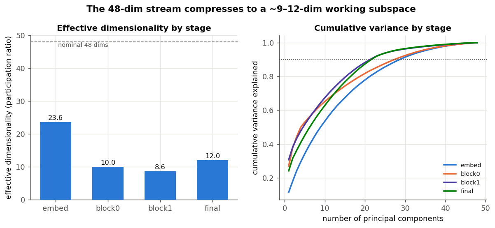
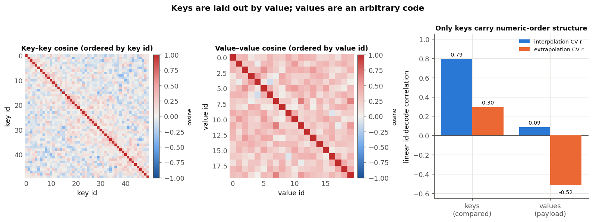

Techniques
Probing & geometry
Linear probes, PCA, effective dimensionality, embeddings
Ablation and patching tell us where computation happens. But what do the activations actually represent? To answer that we look at the shape of the activations — what can be read out of them, how many dimensions they use, and how they are arranged in space.
Linear probes: what information is present
A linear probe is a simple classifier (or regressor) trained to predict some property — a token's identity, its position, the value about to be emitted — from an activation vector. If a simple linear readout succeeds, that information is present and easy to access at that point in the network.
Linear probe — fit a linear map from activations to a label; its accuracy measures how linearly decodable the label is. Crucial caveat: a probe tells you the information is accessible, not that the model uses it. Decodability is not the same as use — remember this; it will bite us.
Probing our model across depth revealed a striking negative result. The global rank of a key (is it the 3rd-smallest? the 8th?) is never linearly decodable — about chance at every layer. Yet the model sorts perfectly. The conclusion: it does not compute a global ordering. It sorts by generation — at each step it just picks the next key, using the local "threshold" we met in Lesson 5, never materializing ranks at all.
Effective dimensionality: how much of the space is used
The residual stream here is 48-dimensional. But is all of it used? A measure called the participation ratio estimates the effective number of dimensions the activations actually spread across.

Embedding geometry: keys are ordered, values are not
Here is the most satisfying geometry result, and it follows directly from what the model has to do. The decoder must compare keys (is this key bigger?) but only copy values (by identity). So we should expect the key embeddings to be arranged by numeric value, and the value embeddings not to bother. Exactly so:

Geometry follows computation. A quantity the model must do arithmetic-like operations on (compare) gets an organized representation; a quantity it only shuffles gets a shapeless one. This is also why famous "clean" manifolds — circles for modular arithmetic, helixes for numbers — appear only when the task forces them.
That key order supports interpolation (r = 0.79 for held-out ids mixed among trained ones) but not clean extrapolation to unseen id ranges (r = 0.30). So "ordered" means "linearly decodable and thresholdable," not "a clean geometric line." Two different measurements gave 0.79 and 0.30, and the honest picture is both — a distributed order code, not a tidy axis.
The contextual stream has clean structure
The raw embedding table looks nearly shapeless in 3D — its order is a weak, distributed direction. But the contextual residual states are highly structured: they cluster by token role, and the clusters sharpen with depth.
These two interactive views make the contrast concrete — drag to rotate:
The residual stream, colored by token role, with a stage toggle: watch input/output key/value/SEP roles pull apart from embedding to final.
The raw key vs value embedding tables. Toggle the id-path: it threads coherently through the keys but tangles through the values — ordered vs arbitrary, made visible.
The model never builds global ranks (it sorts by generation); it does its real work in ~9 effective dimensions; keys are embedded with order because they are compared and values without because they are copied; and the contextual stream separates cleanly by role. Every one of these is a statement about representation, testable with a probe or a projection.
We now have observations (attention), interventions (ablation, patching), and representations (probing, geometry). Time to assemble them into a single algorithm.